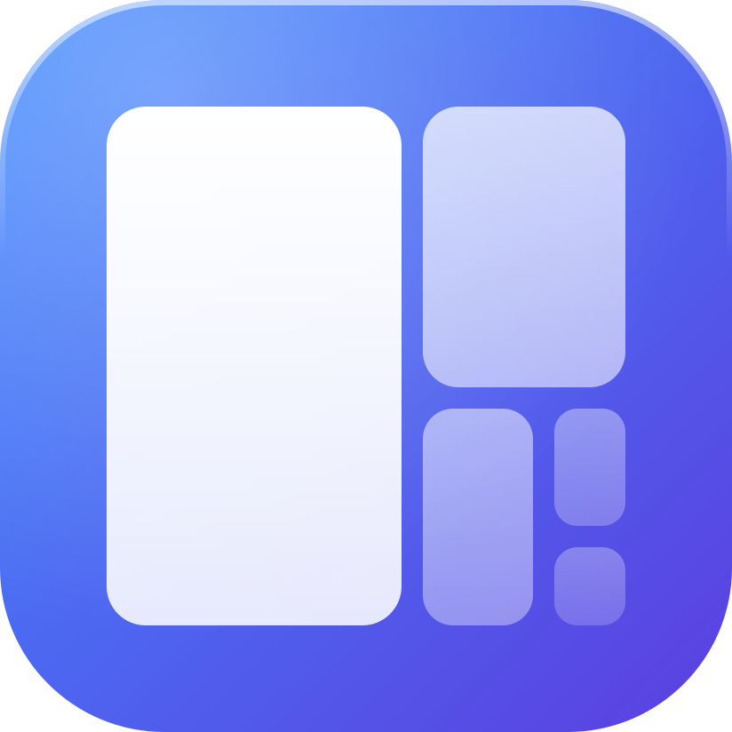
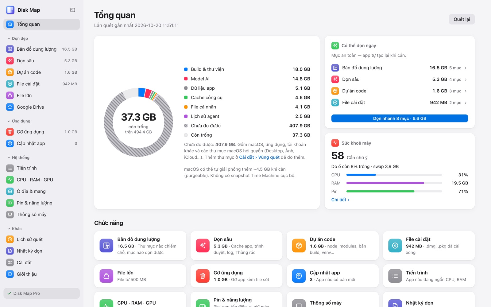
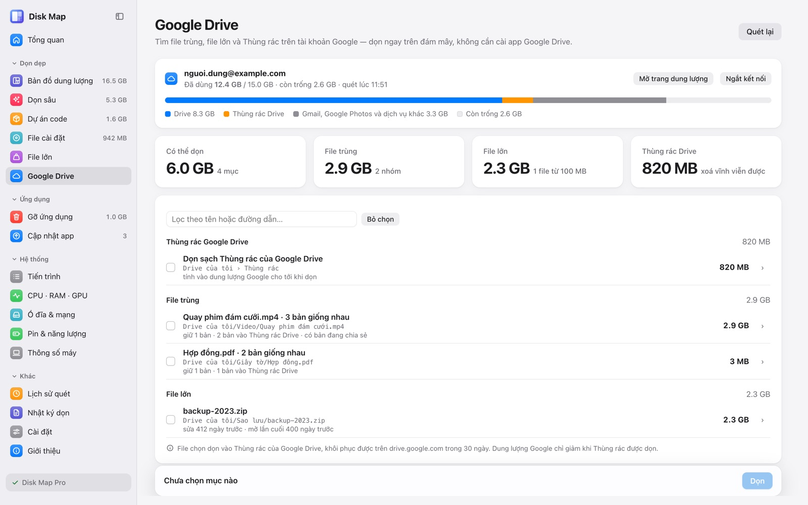

Disk MapDisk Map quét thư mục home của bạn, vẽ bản đồ dung lượng và chỉ ra phần dọn được: cache, log, node_modules, file cài đặt, app cũ kèm file sót. Có cả mục dọn file trùng và file lớn trên Google Drive.
Tải Disk Map cho Mac
Mỗi mục ghi rõ dọn xong thì ảnh hưởng gì. Mục tạo lại được thì xoá hẳn để có chỗ ngay; mục cần cân nhắc thì vào Thùng rác để còn lấy lại.
Thư mục trong home hiện thành các ô theo kích thước. Lần quét sau đánh dấu mục nào vừa phình to.
Cache ứng dụng, cache trình duyệt và app Electron, log cũ, Thùng rác. Cache của app đang mở không tự được chọn.
node_modules, thư mục build, target, venv tạo lại được. Thư mục có file git đang theo dõi thì bỏ qua.
File .dmg, .pkg đã cài xong trong Downloads, Desktop; file lớn từ 500 MB trở lên để bạn tự xem trước khi bỏ.
Gỡ app cùng dữ liệu nó để lại trong Application Support, Caches, Preferences, LaunchAgents. Tất cả vào Thùng rác.
Tìm file trùng, file lớn và Thùng rác trên tài khoản Google, dọn ngay trên đám mây, không cần cài app Google Drive.
Liệt kê app có bản mới, kể cả app cài qua Homebrew.
CPU, RAM, GPU, ổ đĩa, mạng, pin và tiến trình đang ngốn tài nguyên. Biểu tượng trên thanh menu cho xem số GB còn trống.

Chi tiết ở trang Quyền riêng tư.
Cài lần đầu được dùng thử bản Pro 7 ngày. Hết hạn thì các tính năng miễn phí vẫn dùng bình thường, dữ liệu không mất.
Mua một lần, dùng mãi bản 1.x trên 2 máy Mac. Mua qua email sondang@genplusmedia.com, key gửi lại qua email.
Bản 0.9 là bản thử, chưa được Apple công chứng (notarize), nên macOS chặn app tải từ mạng về. Gỡ chặn bằng một lệnh trong Terminal, làm một lần sau khi cài.
xattr -dr com.apple.quarantine "/Applications/Disk Map.app"Lệnh trên chỉ gỡ cờ “tải từ Internet” mà macOS gắn vào riêng Disk Map, không đổi cài đặt bảo mật của máy. Chỉ chạy lệnh này với file tải từ trang này. Đã thử trên macOS 26, MacBook M4.